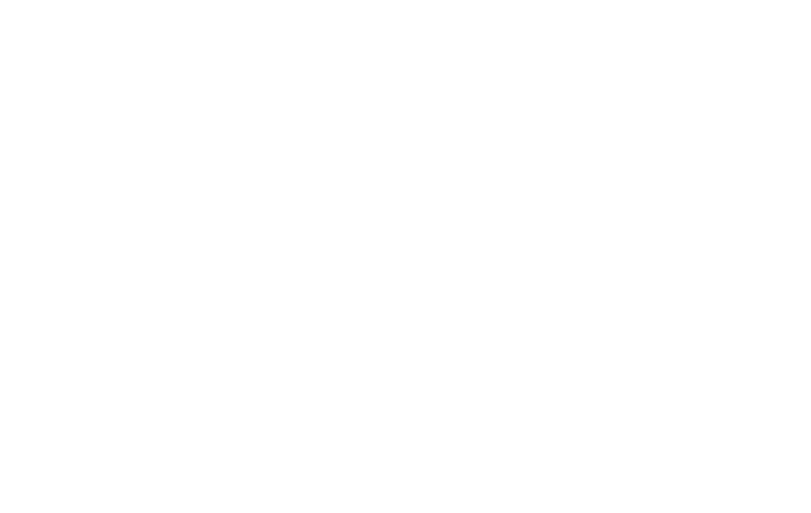

AKST Alaskan Time Zone
UTC -9
Alaska, USA
Gambier Island Time
UTC -9
Gambier Islands
PST Pacific Standard Time
UTC -8
San Francisco, CA, USA
PST Pacific Standard Time
UTC -8
Whitehorse, Canada
MST Mountain Standard Time
UTC -7
Calgary, Canada